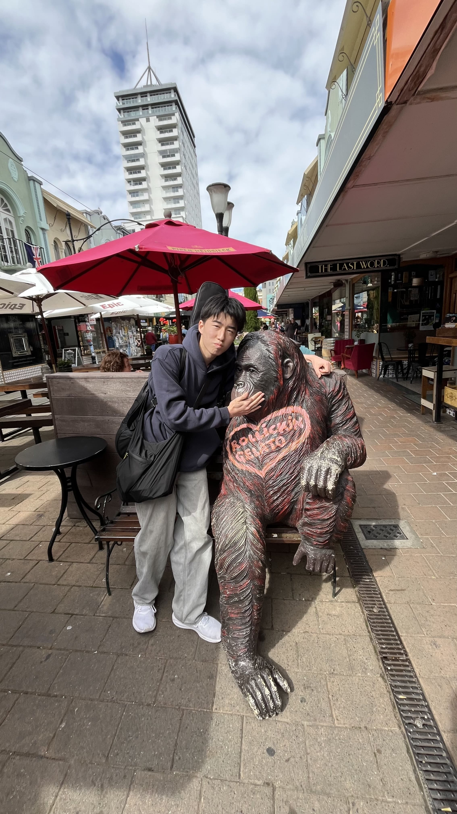

With years of experience in the music industry, Ritsuki Kawai leads Suki's Guitar Shop with passion, confidence, and dedication. He is committed to maintaining the highest standards of customer service, product quality, and professionalism. Whether you have questions, need expert advice, or require assistance, Ritsuki is always ready to help.
As the Assistant Manager of Suki's Guitar Shop, Jon Jon Jon Shaphowered plays an important role in keeping the business running smoothly. With strong leadership skills, excellent communication, and a deep passion for music, he supports the team and ensures every customer receives outstanding service. His dedication and positive attitude make him an essential part of the shop's success.
With exceptional leadership and years of experience in the music industry, Mega Tian oversees the overall operations of Suki's Guitar Shop. Known for his strategic thinking, outstanding management skills, and passion for excellence, he leads the management team and ensures the business continues to grow. His vision and dedication play a major role in the success of the company.